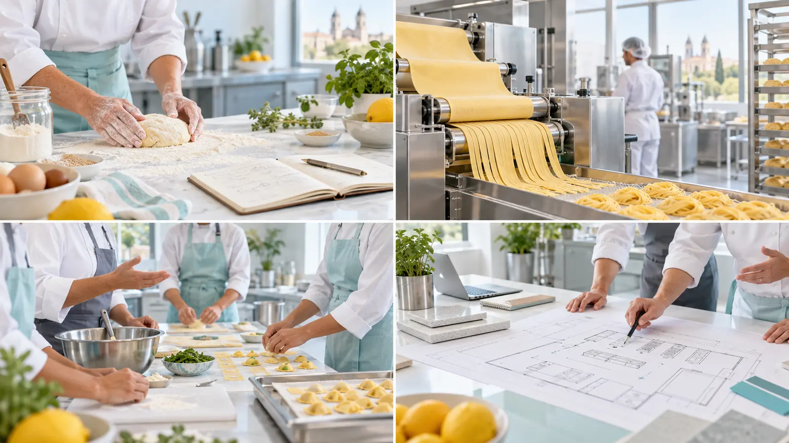
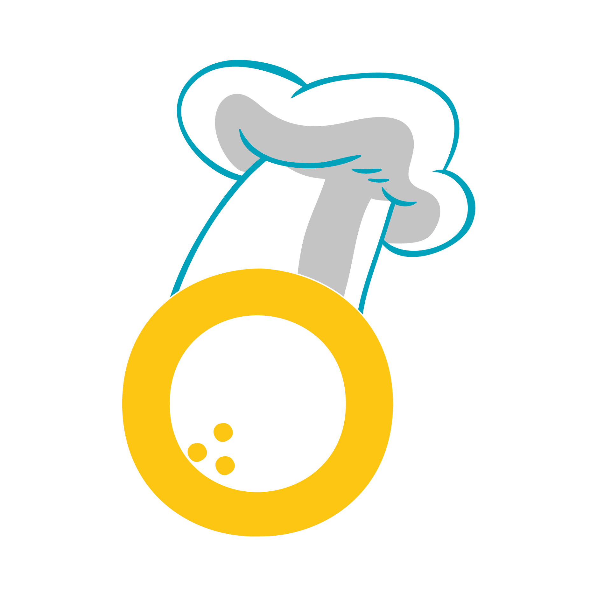
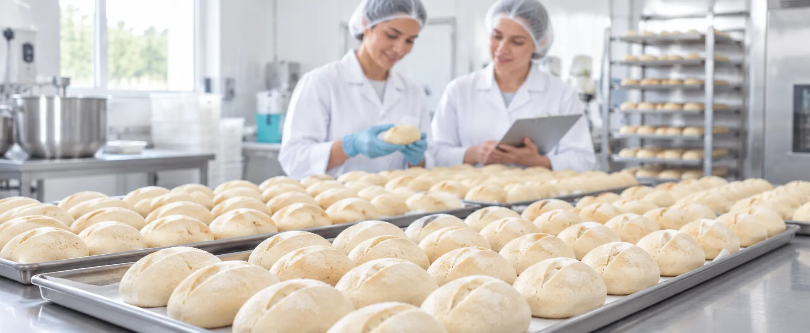
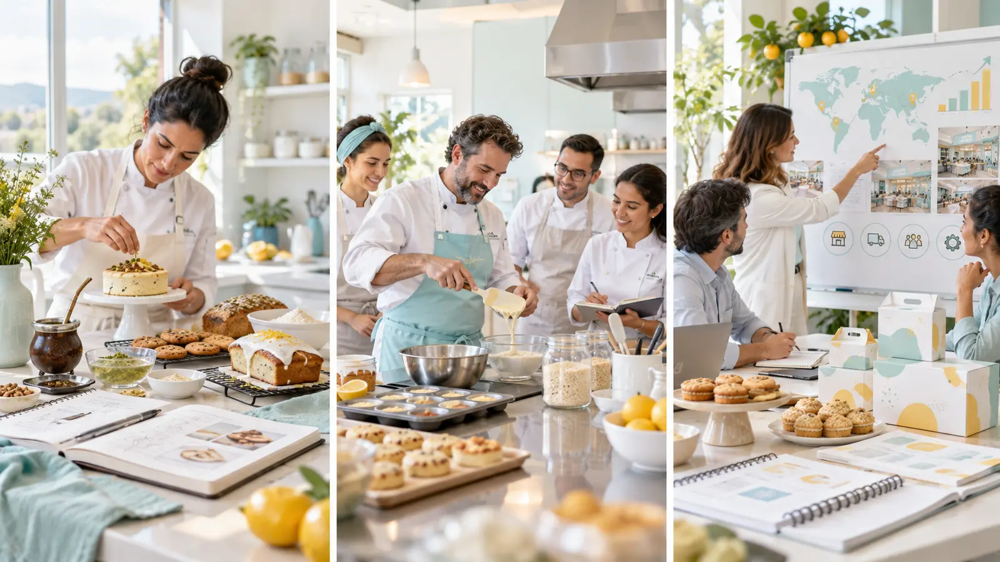

IdeaLa convertimos en una propuesta con identidad.
Desde Córdoba para Argentina y el mundo
Primera
consultora gastronómica especializada en proyectos sin gluten de Córdoba
Tu idea puede convertirse en un gran producto. Nosotros sabemos cómo llevarla a producción.
De la receta a la fábrica. De la cocina a una marca. Del primer producto a un negocio preparado para crecer.
Ruta de crecimiento
Consultoría a medida

Limonetta® Consultorías
De una idea a un sistema que funciona.
Integramos técnica gastronómica, procesos productivos, capacitación y acompañamiento en condiciones reales.
01Idea
→
02Producto
→
03Producción
→
04Crecimiento
Soluciones para todas las etapas
Una gran receta cobra vida cuando se convierte en un producto que funciona, se vende y puede crecer.
Creamos soluciones gastronómicas sin gluten a medida para transformar una idea en un producto deseable, rentable y listo para producir.
Podemos desarrollar desde cero, mejorar una propuesta existente o acompañar una implementación completa. Cada proyecto se diseña según el producto, la cocina, el equipo y sus posibilidades reales de crecimiento.
Emprendimientos
Empresas alimentarias
Marcas
Fábricas
Locales gastronómicos
Proyectos de expansión
Quiénes somos
Experiencia y visión para transformar proyectos sin gluten.

Somos Lorena Quesada y Guadalupe Cuello, profesionales gastronómicas con más de 15 años de experiencia.
Limonetta® desde 2017
Consultorías desde 2017
Córdoba · Argentina · Mundo
Limonetta es una marca registrada que en 2026 celebra nueve años investigando, desarrollando, probando y enseñando gastronomía sin gluten.
Desde 2017 llevamos nuestra experiencia a empresas, marcas, fábricas y emprendimientos. Trabajamos directamente en cocinas, locales y plantas productivas para desarrollar recetas, ordenar procesos, seleccionar equipamiento, capacitar equipos y acompañar implementaciones reales.
Nuestra mirada integra producto, producción y negocio. Podemos intervenir en una necesidad puntual o acompañar un proyecto completo desde la primera idea hasta su puesta en marcha y expansión.
“Aportamos mucho más que una receta: nos involucramos para que el proyecto funcione y pueda crecer.”
De Córdoba al mundo
Conocimiento local. Experiencia real. Visión sin fronteras.
Trabajamos de manera presencial y virtual con empresas, fábricas, marcas y emprendimientos que quieren ingresar o crecer en el mercado sin gluten.
“Tu producto puede empezar en una cocina y llegar mucho más lejos.”
Alcance de nuestras consultorías
Desde Córdoba, sin fronteras.
Áreas de trabajo
Todo lo que una idea necesita para convertirse en un negocio sin gluten.

Investigación y desarrollo
Evaluación de ideas, desarrollo de prototipos y pruebas piloto para transformar una necesidad en un producto viable.
- Formulación y reformulación
- Pruebas con ingredientes y sustitutos
- Textura, comportamiento y conservación
Recetas y aplicaciones para marcas
Creamos preparaciones que muestran las posibilidades de un producto y lo conectan con consumidores y clientes.
- Recetas exclusivas
- Recetarios y fichas técnicas
- Demostraciones y cocina en vivo
Procesos productivos y escala
Ordenamos elaboraciones para producir con claridad, rendimiento y resultados consistentes.
- Estandarización y grandes volúmenes
- Flujos, tiempos y secuencias
- Freezer, horneado y almacenamiento
Armado de cocinas y panaderías
Acompañamos la organización gastronómica y productiva del espacio hasta su puesta en marcha.
- Sectores, circuitos y equipamiento
- Herramientas y capacidad productiva
- Prevención de contaminación cruzada
Capacitación de empresas y equipos
Programas presenciales o virtuales diseñados según el producto, el proceso y las personas que deben implementarlo.
- Jornadas intensivas
- Trabajo en planta o espacio preparado
- Evaluación y seguimiento
Modelos para sucursales y franquicias
Estandarizamos el componente gastronómico para que una propuesta pueda repetirse conservando su identidad y calidad.
- Manuales de recetas y procesos
- Estándares y controles
- Transferencia y capacitación
Activaciones gastronómicas
Experiencias que conectan a una marca con las personas mediante contenido técnico, recetas y elaboración en vivo.
- Lanzamientos y eventos
- Charlas y acciones institucionales
- Contenido gastronómico de marca
Acompañamiento profesional
Seguimiento durante las pruebas, la implementación y la resolución de problemas productivos.
- Correcciones y ajustes
- Trabajo por etapas o proyecto completo
- Confidencialidad de la información

Mucho más que recetas
Una consultoría puede empezar con un producto y transformar todo un negocio.
Productos que representan una marca
Desarrollamos recetas, aplicaciones, recetarios y experiencias para mostrar todo lo que un ingrediente puede hacer.
Equipos que saben cómo producir
Capacitamos, demostramos y acompañamos para que el conocimiento se convierta en práctica diaria.
Procesos preparados para crecer
Organizamos fórmulas, circuitos, documentos y controles para sucursales, franquicias y nuevas escalas.
Cómo trabajamos
Un proceso claro, con objetivos y entregables definidos.
Cada proyecto es diferente. Por eso primero entendemos la necesidad y luego proponemos el recorrido adecuado.
- 01
Primera evaluación
Conocemos el proyecto, el producto, la etapa actual y el problema que necesita resolver.
- 02
Diagnóstico
Analizamos fórmulas, procesos, espacio, equipamiento, capacidad y objetivos.
- 03
Propuesta a medida
Definimos alcance, etapas, modalidad, tiempos, honorarios y entregables.
- 04
Desarrollo e implementación
Realizamos pruebas, documentos, capacitaciones y ajustes según el proyecto.
- 05
Seguimiento
Acompañamos la puesta en marcha y corregimos lo necesario para consolidar el resultado.
Experiencia aplicada
No hablamos solamente de teoría. Lo hicimos en cocinas, locales y fábricas.
Una selección de trabajos y colaboraciones que muestran distintas escalas de intervención.
Desarrollo industrialCapadocia
Pastas laminadas sin TACC en producción continua
Tres meses de trabajo intensivo dentro de una fábrica de Malagueño. Desarrollo de masas para grandes volúmenes, pruebas en línea, aditivos, conservantes, estandarización y capacitación del equipo.
Trabajo presencial en planta · jornadas de 8 horasConsultoría en fábrica · 2020Cresfood
Recetas, procesos e implementación
Acompañamiento de tres a cuatro meses dentro de fábrica para desarrollar y ajustar recetas, ordenar procesos productivos y capacitar al equipo.
Proyecto integralTrimix
De la idea a un negocio listo para funcionar
Nombre, identidad, logo, local, cocina, herramientas, iluminación, recetas, procesos y acompañamiento para la puesta en marcha.
Jornada presencial · 2023Saborapan
Capacitación intensiva en Corral de Bustos
Clase de jornada completa, elaboraciones en vivo, traslado de materiales y orientación para una futura línea de producción sin gluten.
Colaboración institucionalPorta
Recetas, charla y cocina en vivo
Desarrollo de elaboraciones con productos de la empresa y participación en una actividad abierta al público en el Hospital de Niños.
Los proyectos se presentan como antecedentes de trabajos y colaboraciones realizadas. El alcance completo de cada intervención se mantiene bajo confidencialidad.
Qué puede incluir una consultoría
No entregamos solamente una receta. Dejamos un sistema de trabajo.
Según el alcance contratado, el proyecto puede incluir documentación, capacitación y acompañamiento para que el resultado pueda aplicarse y repetirse.
Diagnóstico y plan de acción
Recetas y formulaciones
Fichas técnicas
Procesos estandarizados
Manuales operativos
Recomendación de equipamiento
Capacitación de equipos
Pruebas y correcciones
Seguimiento de implementación
Proyecto Limonetta
Durante nueve años ayudamos a crear proyectos sin gluten. Ahora queremos expandir el nuestro.
Estamos desarrollando un modelo de pastelería especializada sin gluten, basado en productos propios, procesos estandarizados y una propuesta preparada para crecer.
Conocer el proyecto
Buscamos
Inversores y socios estratégicos
- Capital para el primer punto
- Experiencia comercial u operativa
- Alianzas para producción, distribución o expansión
La información técnica, económica y confidencial se comparte en una instancia privada.
Preguntas frecuentes
Antes de comenzar.
¿La consultoría es un curso?
No. Cada consultoría se diseña según las necesidades, la escala y los objetivos de un proyecto específico.
¿Trabajan solamente con panaderías?
No. Acompañamos distintos rubros gastronómicos y alimentarios que necesitan desarrollar productos, procesos o propuestas sin gluten.
¿Puede realizarse de manera virtual?
Sí. Algunas etapas pueden desarrollarse virtualmente. Cuando el proyecto requiere trabajo presencial, se cotizan traslado, jornadas y condiciones de implementación.
¿Cómo se calculan los honorarios?
Según la complejidad, las etapas, la modalidad, los tiempos y los entregables. Luego de la primera evaluación enviamos una propuesta personalizada.
¿Trabajan con información confidencial?
Sí. El alcance puede contemplar acuerdos de confidencialidad y pautas específicas para proteger fórmulas, procesos e información del negocio.
¿Realizan certificaciones o análisis de laboratorio?
No realizamos análisis químicos ni certificaciones. Nuestro trabajo se concentra en el desarrollo gastronómico y productivo; cuando es necesario, articulamos con los profesionales o instituciones correspondientes.
Primera evaluación
Contanos qué necesitás desarrollar, corregir o implementar.
Completá los datos principales. Al enviar, prepararemos un mensaje ordenado para iniciar la conversación por WhatsApp.